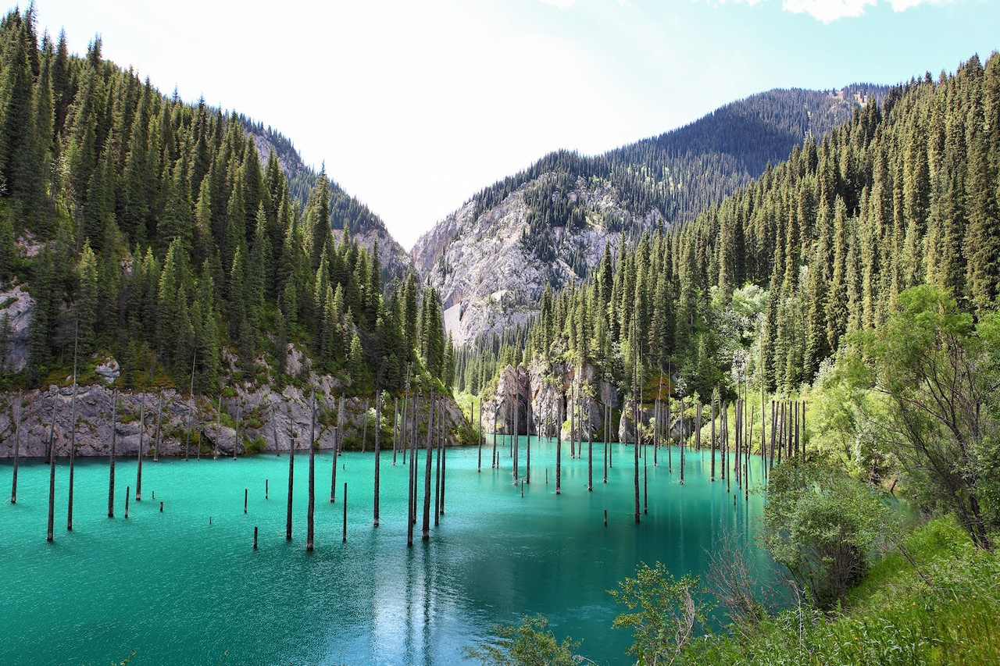
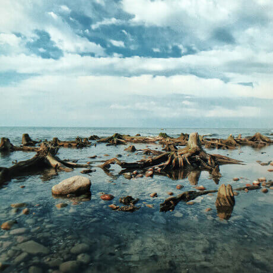
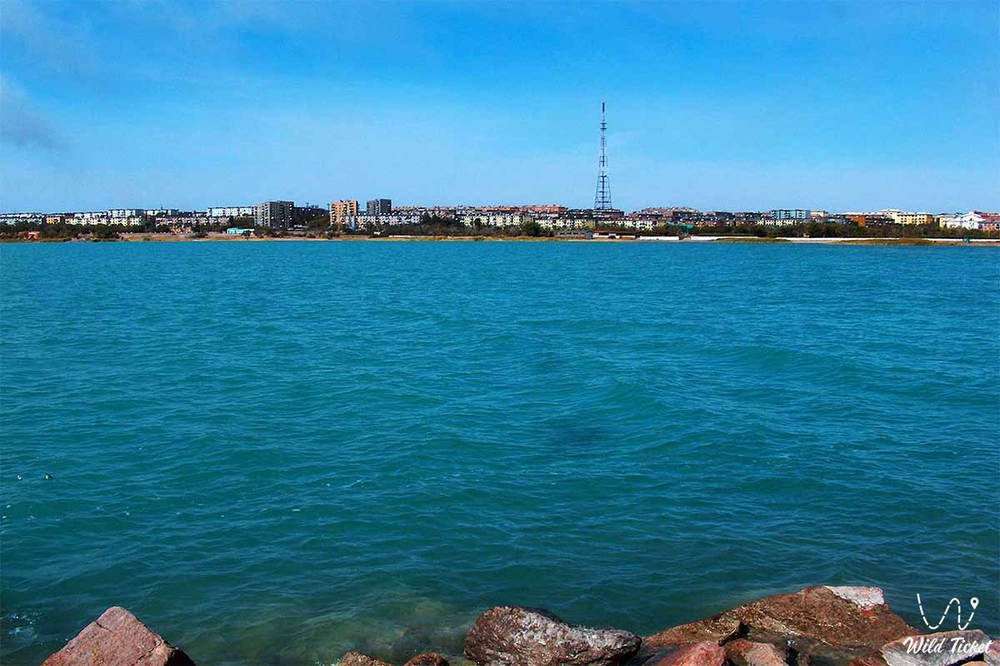
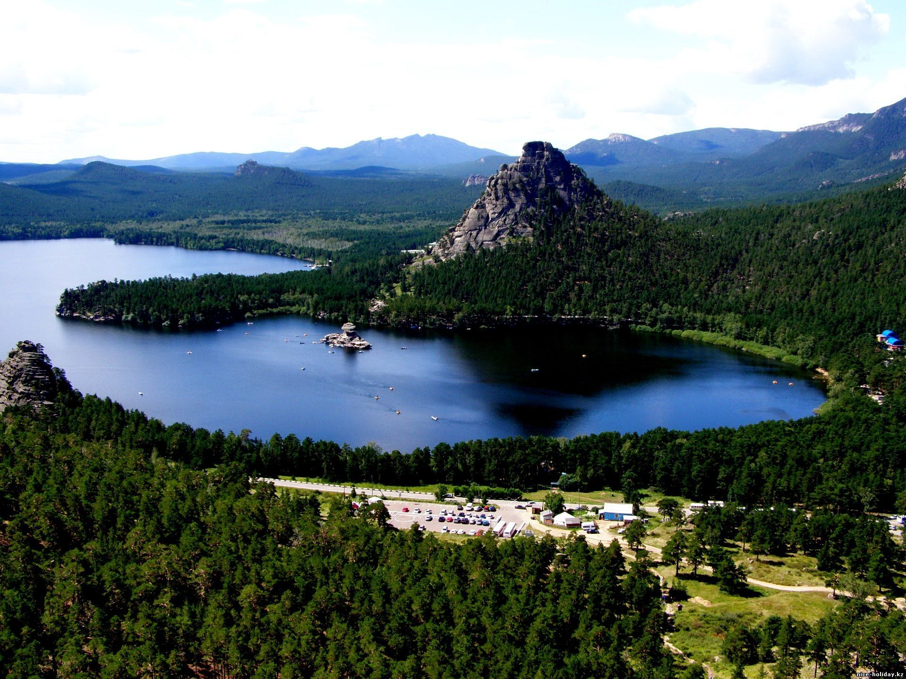
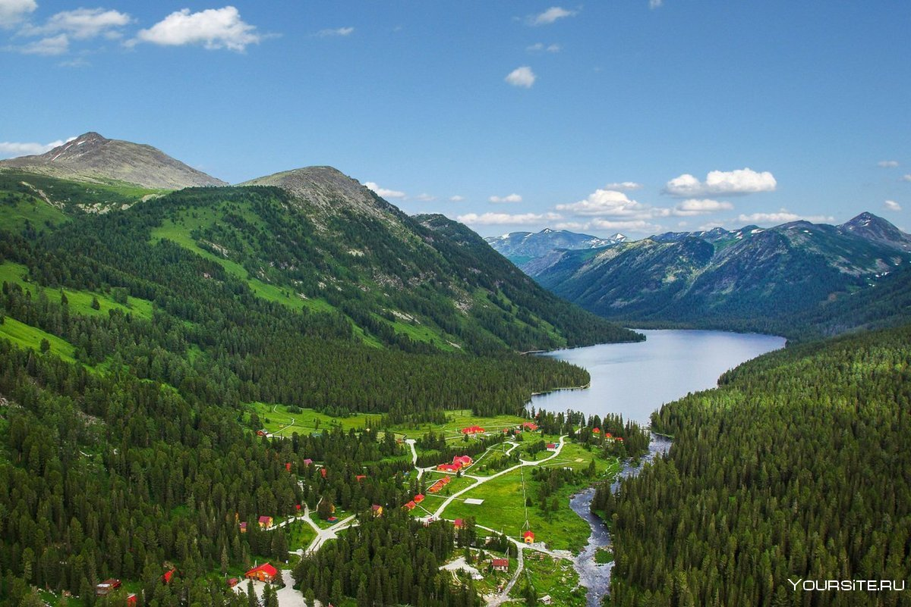

Путешествие по Казахстану
Отдых в Казахстане летом
Летний отдых в Казахстане интересный, познавательный и запоминающийся. Страна славится уникальной природой, солеными и пресными водоемами, национальными парками.
Алаколь
Алаколь — большое горько-соленое озеро, расположенное в Юго-Восточном Казахстане на границе Абайской и Жетысуской областей. Как утверждает София Романова, Алаколь — континентальное бессточное озеро, в котором собираются речные, подземные и атмосферные воды. При их слиянии происходят химические процессы, которые приводят к формированию уникального солевого состава воды. Звучное название, которое с казахского языка переводится как 'пестрое озеро', водоем получил не зря.
В течение дня цвет воды меняется от лазурно-голубого утром до пурпурно-фиолетового на закате. В солнечные дни озерная вода наполнена красками, в пасмурную погоду становится серо-черной. Вот преимущества отдыха на Алаколе: теплый климат; целебная соленая вода, которая в летние месяцы прогревается до +25 °C; есть пансионаты, которые подходят для семейного отдыха; вблизи есть достопримечательности — Джунгарские ворота, Чертов мост, озеро Жаланашколь. Пляж озера каменистый, усыпанный черной вулканической галькой, поэтому нужна обувь для купания.
Балхаш
Это второе по величине непересыхающее соленое бессточное озеро. Узкий полуостров и проходящий у его подножия пролив Узун-Арал делит Балхаш на две части: в западной части небольшая глубина, вода практически пресная; восточная часть озера соленая и глубокая.
Популярные виды отдыха на озере Балхаш — пляжный туризм. Отдыхающих привлекает: теплая вода (летом прогревается до +25 °С); песчаный пляж; живописные скалы, окружающие озеро; горная цепь Бектау-ата с живописными ущельями, скалами и уникальной флорой; тугайные леса. К услугам отдыхающих — многочисленные зоны и дома отдыха, отели и санатории. Есть возможность заняться водными видами спорта (парусный спорт, гребля на байдарках и каноэ) и побывать на рыбалке.
Бурабай
Главные природные достопримечательности Акмолинской области — объекты национального природного парка «Бурабай». Лечебный курорт возведен недалеко от одноименного озера. Парк называют жемчужиной Казахстана и казахстанской Швейцарией. По утверждению издания Harper's Bazaar, Бурабай — лучшее место для неспешного отдыха, пеших прогулок и самопознания.
Визиткой курорта называют гору Кокшетау (Синюха) высотой 947 м, которая находится в 25 км от города Щучинск. В национальном парке расположено 14 крупных (Бурабай, Щучье, Катарколь и др.) и множество мелких озер. На берегах озер построены многочисленные санатории, грязелечебницы и пансионаты, которые принимают посетителей круглый год. Основным показанием для лечения в санаториях Бурабая стали заболевания органов дыхания.
Катон-Карагай
Катон-Карагай — живописное село, расположенное в восточной части Казахстана в долине реки Сарымсак у подножия северных склонов горного хребта Сарымсакты. В этой местности находится Маркакольский заповедник и национальный природный парк. Основные туристические преимущества: чистые озера; горные вершины, напоминающие Альпы; обширные лесные массивы; шумные скалистые реки; лечебные источники; рыбалка; пешие и конные прогулки по национальному парку. Туры в Катон-Карагай — возможность посетить экологически чистый уголок с живописной природой, богатой флорой и фауной.